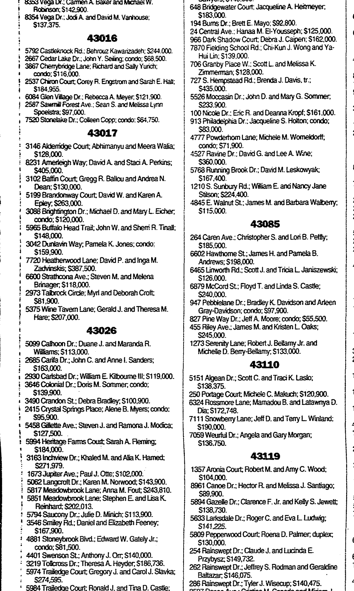

Dāvīds Zadvinskis b. 1964
Partner of Peter's second cousin Inga Augenberga.
Living. As for every living relative on this site, the birth date is given by year only, and no current address is shown.
Also recorded as David Paul Zadvinskis.
Dāvīds Zadvinskis was born in 1964 (according to an online family tree)2.
Family
- Partner
- Inga Augenberga b. 1971
Life events
| Event | Date | Place and details |
|---|---|---|
| Born | 1964 | According to an online family tree2 |
| Lived | 1 May 1985 | Grand Rapids, Michigan, United States According to an online family tree3 |
| Lived | 1 Apr 1994 | Royal Oak, Michigan, United States According to an online family tree4 |
| Lived | 1 Jul 1999 | Bloomfield Hills, Michigan, United States According to an online family tree5,6 |
| Lived | 1 Jul 1999 | Minneapolis, Minnesota, United States According to an online family tree7 |
| Lived | 7 Aug 1999 | Dublin, Ohio, United States8,9 |
| Lived | 6 Aug 2003 | Dublin, Ohio, United States According to an online family tree10 |
| Note | 15 Jun 2019 | Grand Rapids, Michigan, United States Deaths of his parents, Dr. Zigfrids Zadvinskis, M.D. (born 5 January 1924 in Rēzekne, Latvia, to Peter Zadvinskis and Scholastika Slachtovic Zadvinskis; died Saturday, 15 June 2019 in Grand Rapids, Michigan, age 95; studied medicine at Baltic University in Hamburg and graduated from Würzburg…12 |
| Lived | Ann Arbor, Michigan, United States According to an online family tree11 |
Records


Sources
- MyHeritage family tree 'Dzimta' of Peter's third cousin (his family site), member GEDCOM export of 26 Oct 2026, I149 (person-6000149), GEDCOM lines 4473–4515.
NAME David Paul /Zadvinskis/
His record match: ASV Publisko Ierakstu Indekss, https://www.myheritage.lv/research/collection-10220/asv-publisko-ierakstu-indekss?itemId=136305703&action=showRecord.
- MyHeritage family tree 'Dzimta' of Peter's third cousin (his family site), member GEDCOM export of 26 Oct 2026, I149 (person-6000149), GEDCOM lines 4473–4515.
BIRT · 1964
- MyHeritage family tree 'Dzimta' of Peter's third cousin (his family site), member GEDCOM export of 26 Oct 2026, I149 (person-6000149), GEDCOM lines 4473–4515.
RESI · 1 MAY 1985 · [address omitted] , Grand Rapids, Michigan 49506-5367, USA
- MyHeritage family tree 'Dzimta' of Peter's third cousin (his family site), member GEDCOM export of 26 Oct 2026, I149 (person-6000149), GEDCOM lines 4473–4515.
RESI · 1 APR 1994 · [address omitted], Royal Oak, Michigan 48073-6627, USA
- MyHeritage family tree 'Dzimta' of Peter's third cousin (his family site), member GEDCOM export of 26 Oct 2026, I149 (person-6000149), GEDCOM lines 4473–4515.
RESI · BET 21 NOV 1994 AND 16 OCT 2007 · [address omitted], Bloomfield Hills, Michigan 48304-1461, USA
- MyHeritage family tree 'Dzimta' of Peter's third cousin (his family site), member GEDCOM export of 26 Oct 2026, I149 (person-6000149), GEDCOM lines 4473–4515.
RESI · 1 JUL 1999 · [address omitted], Bloomfield, Michigan 48304-1461, USA
- MyHeritage family tree 'Dzimta' of Peter's third cousin (his family site), member GEDCOM export of 26 Oct 2026, I149 (person-6000149), GEDCOM lines 4473–4515.
RESI · 1 JUL 1999 · [address omitted], Minneapolis, Minnesota 55403-1278, USA
- House Market (Franklin County), The Columbus Dispatch (Columbus, Ohio), 7 August 1999, p. 40.
43017 ... [address omitted]; David P. and Inga M. i Zadvinskis; $387,500.
Translation: 43017 ... [address omitted]; David P. and Inga M. Zadvinskis; $387,500.
Purchased house at [address omitted], ZIP 43017 (Dublin, Franklin County, Ohio), for $387,500 jointly with his wife Inga M. Zadvinskis.
- MyHeritage family tree 'Dzimta' of Peter's third cousin (his family site), member GEDCOM export of 26 Oct 2026, I149 (person-6000149), GEDCOM lines 4473–4515.
RESI · [address omitted], Dublin, Ohio 43017-8223, USA
- MyHeritage family tree 'Dzimta' of Peter's third cousin (his family site), member GEDCOM export of 26 Oct 2026, I149 (person-6000149), GEDCOM lines 4473–4515.
RESI · 6 AUG 2003 · [address omitted], Dublin, Ohio 43017-7319, USA
- MyHeritage family tree 'Dzimta' of Peter's third cousin (his family site), member GEDCOM export of 26 Oct 2026, I149 (person-6000149), GEDCOM lines 4473–4515.
RESI · [address omitted], Ann Arbor, Michigan 48104-3449, USA
- Obituaries of Zigfrids Zadvinskis, M.D. (17 June 2019) and Pauline Dzenis Zadvinskis (February 2021), The Grand Rapids Press (Grand Rapids, Michigan).
Zadvinskis, Zigfrids Zigfrids Zadvinskis, M.D., 95, of Grand Rapids, died on Saturday June 15, 2019 at Faith Hospice, of multiple myeloma. Preceded in death by his parents, Scholastika Slachtovic Zadvinskis and Peter Zadvinskis, and brothers Romans Zadvinskis and Peter Daugavietis, he is survived by his wife of 70 years, Pauline Dzenis Zadvinskis, sons John Zadvinskis, Edmund Zadvinskis, Peter (Linda) Zadvinskis, M.D., all of Grand Rapids, and David (Inga) Zadvinskis, M.D., of Dublin, Ohio, sister Nina Masilune of Riga, Latvia, and granddaughters Madeline and Bonnie Zadvinskis of Grand Rapids. Born in Rezekne, Latvia, on January 5, 1924
Deaths of his parents, Dr. Zigfrids Zadvinskis, M.D. (born 5 January 1924 in Rēzekne, Latvia, to Peter Zadvinskis and Scholastika Slachtovic Zadvinskis; died Saturday, 15 June 2019 in Grand Rapids, Michigan, age 95; studied medicine at Baltic University in Hamburg and graduated from Würzburg Medical School in 1956; internist at Blodgett Memorial and St. Mary's hospitals in Grand Rapids and Associate Clinical Professor at Michigan State University) and Pauline Dzenis Zadvinskis (born 22 January 1927 in Preiļi, Latvia, to Antons and Veronika Dzenis; married Zigfrids Zadvinskis on 5 June 1949 in Fischbach DP camp near Nuremberg, Germany; arrived in Grand Haven, Michigan on 26 May 1950; died Ash Wednesday, 17 February 2021 in Grand Rapids, age 94); survived by sons John Zadvinskis, J.D., Edmund Zadvinskis, Dr. Peter (Linda) Zadvinskis, M.D., and Dr. David (Inga) Zadvinskis, M.D., of Dublin, Ohio.